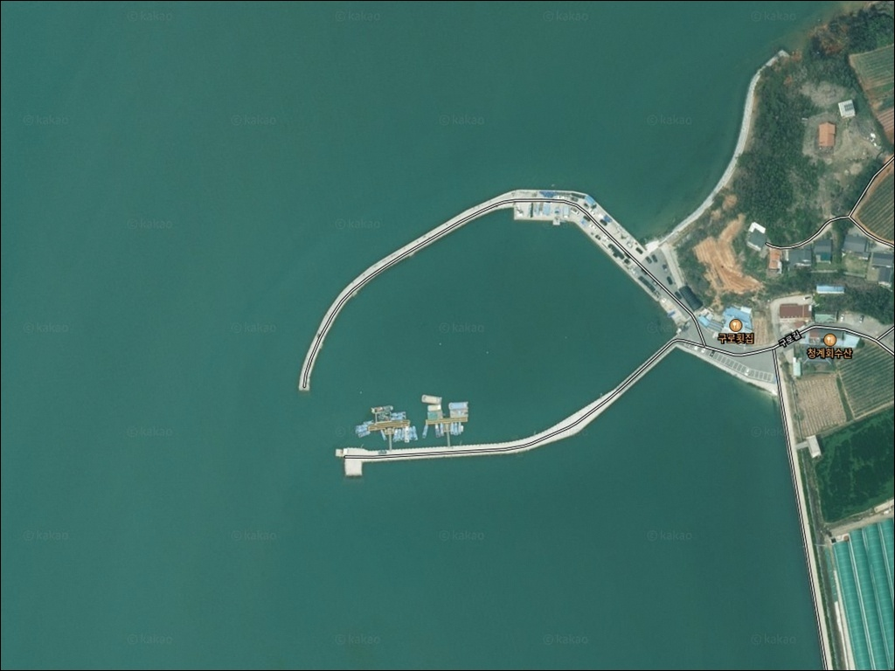
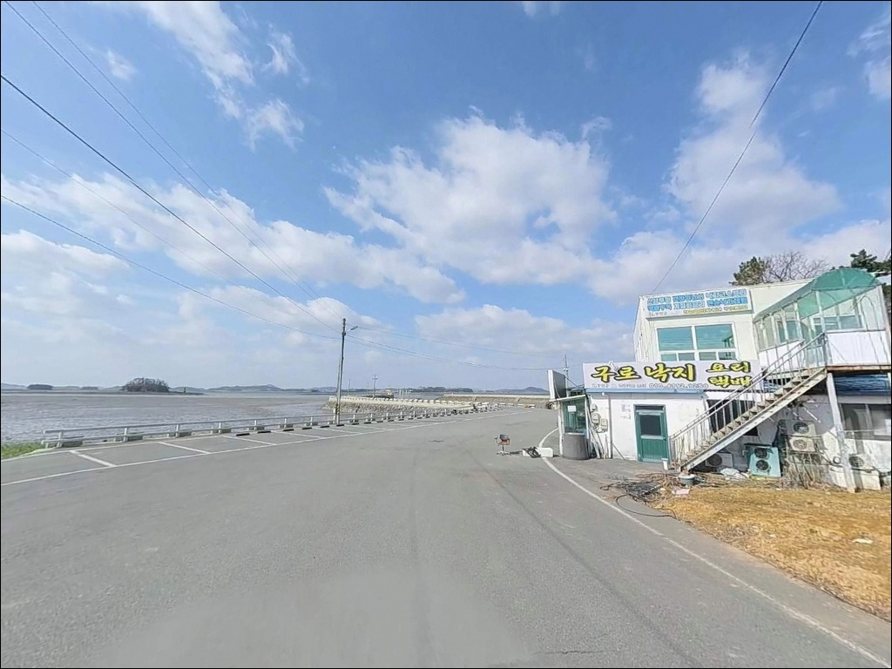
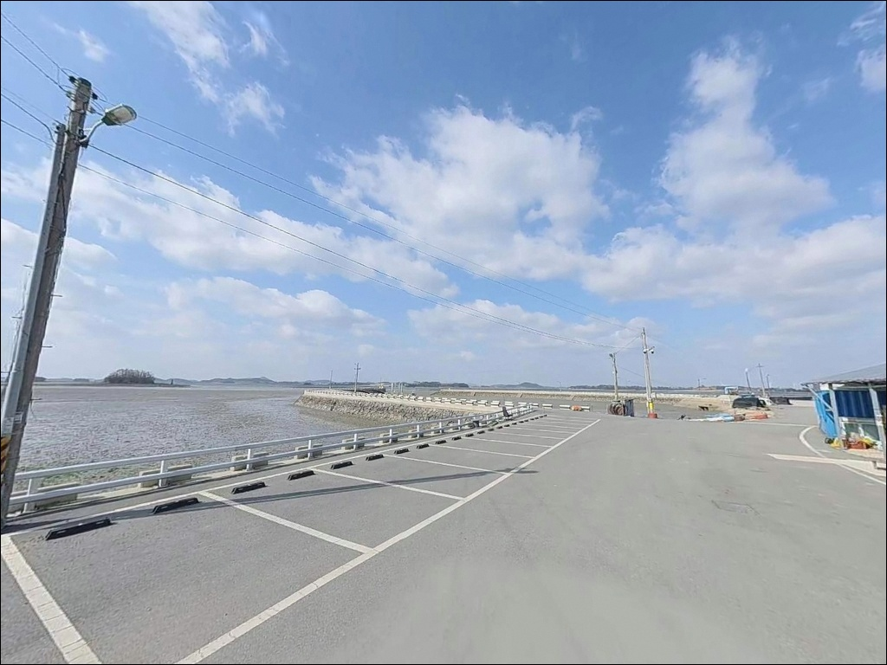
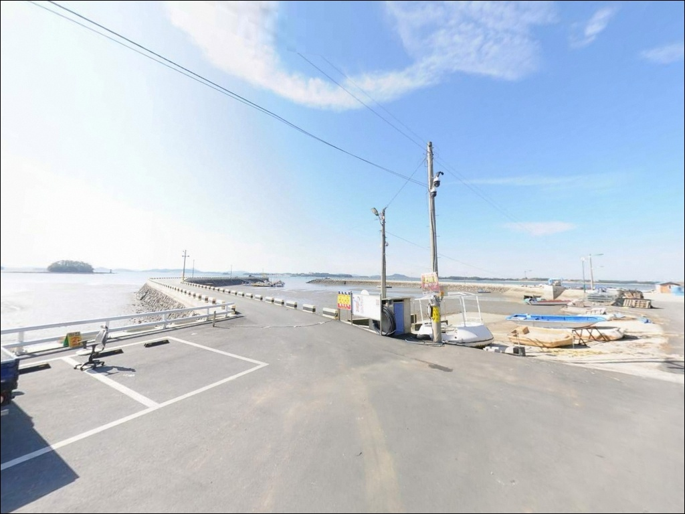
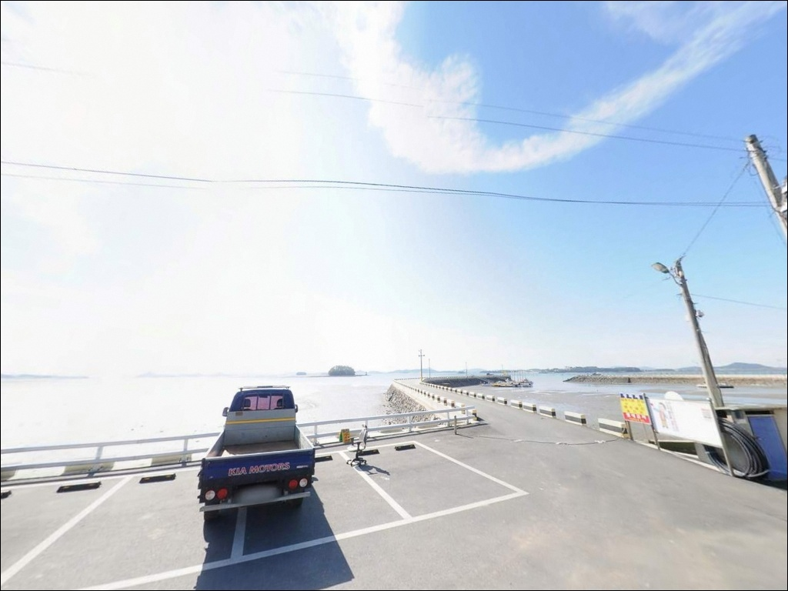
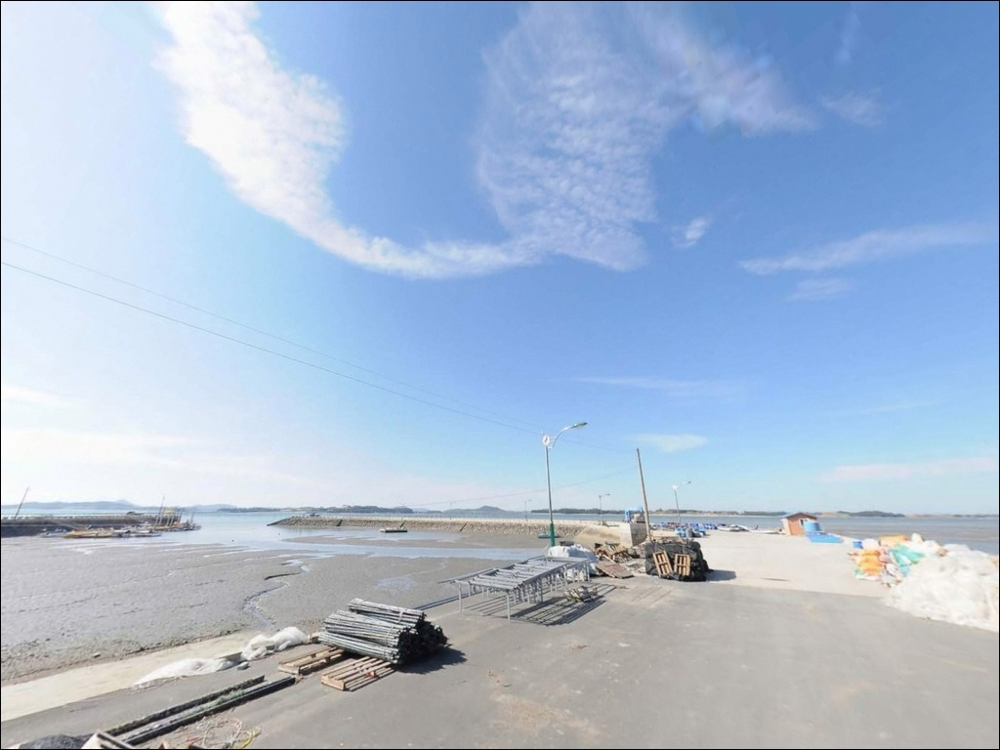
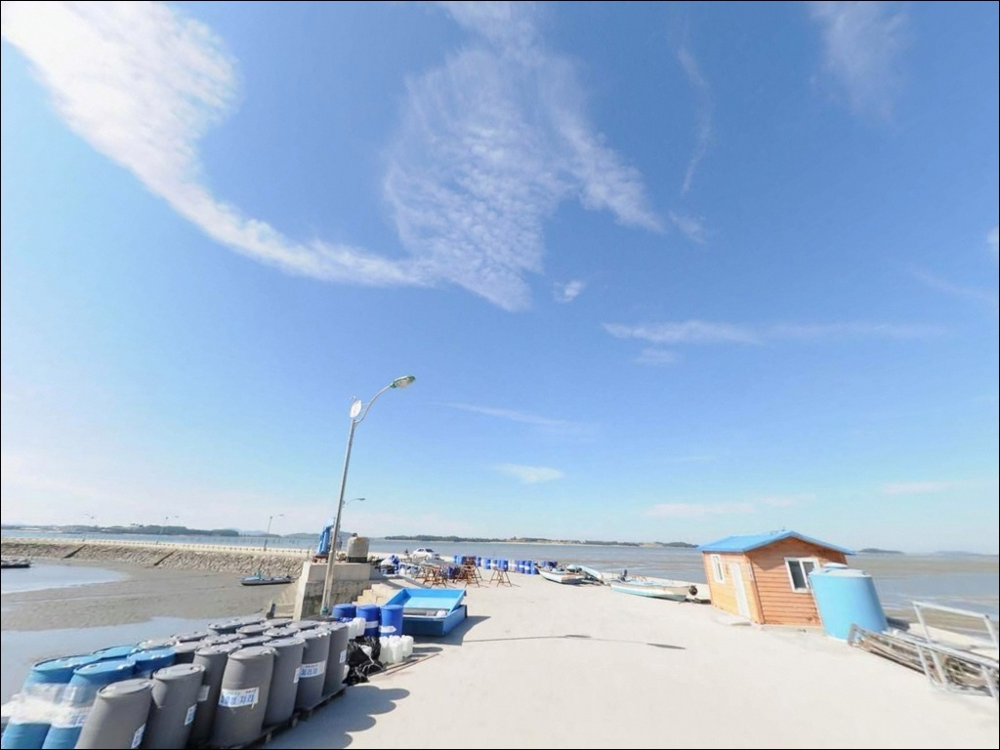
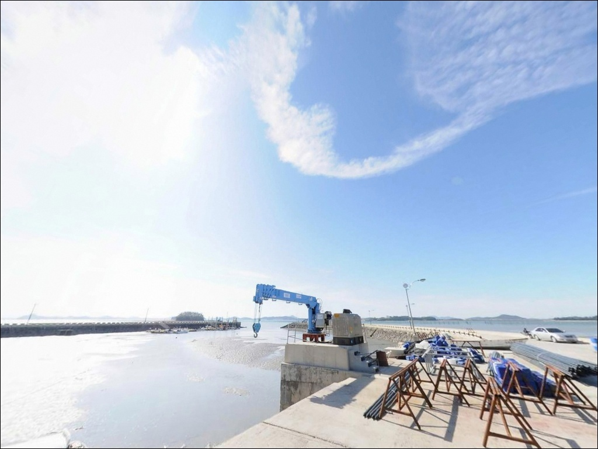
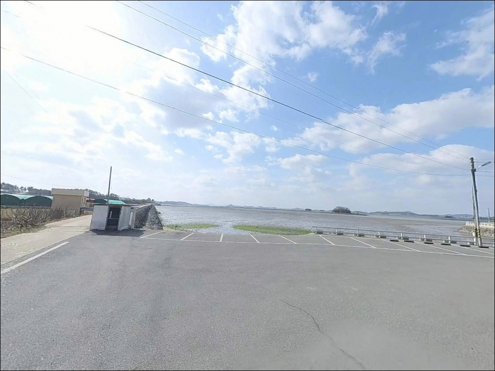

구로리항, 전남 무안군 노을빛이 스며드는 차박, 낚시 겸용 감성 장소


포인트 안내
구로리항
전남 무안군 청계면 구로리 715-8
물때를 확인하지 않고 구로리항을 찾으면
갯벌이 드러난 빈 바다를 마주하게 됩니다.
간조 시간대에 도착하면
낚시 채비를 던질 수면조차 확보되지 않는 것이
이 포인트의 핵심 특성입니다.
구로리항은 물때를 맞추지 않으면
낚시 자체가 불가능해지는 내만형 포인트입니다.
무안반도 안쪽, 청계만을 품은 구로리는
방파제와 선착장이 조용한 어촌 마을에
바짝 붙어 있는 소규모 항구입니다.
야간 원투낚시 출조 후기가 꾸준히 확인되는 곳으로,
일반적으로 알려진 방파제 포인트와 달리
조류보다 물때 타이밍이 조과를 가르는
전형적인 서해 내만형 구조를 갖추고 있습니다.
이 글은 구로리항의
진입 동선, 물때 의존 구조,
원투낚시 중심의 낚시 여건에 집중합니다.
조황 단정이나 특정 어종 보장은
이 글의 범위에 포함되지 않습니다.

1. 포인트 위치 및 진입 동선 분석
구로리항은 청계면 소재지에서
해안 방향으로 빠지는 마을길을 따라 들어가는
소규모 어촌 항구입니다.
선착장 입구에서 방파제까지는
약 350m 안쪽으로 이어지는 단일 차로 성격의
마을 안길을 통과해야 하는 구조입니다.
승용차와 소형 SUV 기준으로는
진입 자체에 큰 무리가 없는 편입니다.
다만 도로 폭이 넉넉하지 않아
대형 SUV나 캠핑 장비를 갖춘 차량이라면
출발 전 위성지도로 진입로를 미리 확인하고 가는 편이 좋습니다.
회차 공간은 선착장 인근 공터 수준으로,
트레일러나 캠핑카는 회차와 진출이
불편할 수 있는 구조입니다.
주차는 방파제 초입 공터 또는
선착장 인근 도로변 여유 공간을 활용하는 방식이
일반적입니다.
항구와 마을이 바로 맞닿아 있어
어선 통행 동선을 막지 않는 자리가 먼저입니다.

2. 차박 환경 평가 및 야간 체류 여건
구로리항은 마을과 바로 맞닿은 구조라
독립적인 차박 공간을 기대하기는 어렵습니다.
주차 공간 자체가 어선 차량과 공유하는 형태이고,
동시 체류 가능 대수도 많지 않아
메인 차박지보다는 낚시 출조 후
짧게 머무는 형태가 이 포인트에 맞는 운용 방식입니다.
야간에는 차량 통행이 거의 없어 조용한 편이고,
민가 밀집도도 낮은 어촌 분위기입니다.
다만 밤에 어선이 새벽 조업을 위해 움직이는 경우가 있어
선박 통행 동선과 주차 자리 간 거리를
미리 고려해두는 편이 좋습니다.
가로등은 선착장 주변에 일부 있지만
개인 조명 장비 없이는 낚시가 어려운 수준입니다.
바람은 청계만 안쪽 내만 구조상
외해에 직접 노출된 방파제보다는 약한 편입니다.
다만 기상 변화에 따라 해무와 바람이
빠르게 바뀌는 서해 특성은 그대로 적용되므로
당일 기상 예보는 반드시 확인해야 합니다.


3. 주변 편의시설 및 인프라 현황
구로리항 바로 인근에는
구로횟집과 구로수산이 마을 중심부에 위치합니다.
어촌특화마을로 지정된 이력이 있어
마을 자체에 기본 어촌 인프라는 갖춰져 있습니다.
다만 운영 여부와 영업 시간은
방문 전 직접 확인이 필요합니다.
반경 3km 이내에는
청계농협 하나로마트가 있어
출조 전 기본 식자재와 소품을
미리 구비하는 용도로 활용할 수 있습니다.
반경 10km권으로 이동하면
무안읍 방향의 편의점과 마트,
남악신도시 일대의 대형 생활 인프라를
이용할 수 있는 거리입니다.
응급 의료기관이나 약국은
무안읍 방향으로 이동해야 하므로
비상약품과 충분한 수분은
출발 전에 완비하는 것이 기본 준비입니다.

4. 진입 전 반드시 챙겨야 할 준비사항
구로리항 방문 전에 가장 먼저 확인할 것은
물때입니다.
청계만 안쪽 내만 구조 특성상
수심이 얕아 간조 시에는 갯벌이 드러납니다.
중들물에서 중날물 구간이
실질적인 낚시 가능 타임으로,
바다타임에서 무안·청계 기준 물때를 확인하고
출발 시각을 맞추는 것이 기본 전략입니다.
현장에 낚시 금지 구역 표지판이 설치되어 있습니다.
방파제에 진입하기 전 표지판 내용을 반드시 확인하고,
금지 구역을 벗어난 자리에서만 낚시해야 합니다.
어선 통행 동선과 어구에 접촉하지 않도록
자리 선정은 진입 직후에 확인하는 순서로 합니다.
갯벌 지형 특성상 채비 밑걸림보다는
원거리 캐스팅 기준으로 준비하는 것이 맞습니다.
여분 채비는 넉넉히 챙기고,
야간 원투 출조라면 헤드랜턴과 구명조끼는
필수입니다.

5. 물때에 따라 낚시 여건이 달라지는 구조
구로리항은 청계만 안쪽에 자리한
반폐쇄형 내만 포인트입니다.
만 안쪽 구조라 외해 방파제처럼 조류가 세지는 않지만,
대신 조수간만 차에 따른 수위 변화가
낚시 여건 전체를 결정하는 구조입니다.
방파제 전면과 선착장 끝단은
수심이 깊어지는 구간으로,
만조 전후 타이밍에 낚시 여건이 살아납니다.
수심 자체가 얕은 편이라
50m 이상 캐스팅이 기본 조건으로 언급되는 이유가 여기 있습니다.
방파제 전면을 원거리로 노리거나
갯골 수로 방향을 찾아 채비를 고정하는 방식이
이 포인트의 현장 운용법입니다.
갯골이란 갯벌에 형성된 수로 구조로,
썰물 시에도 물이 남아 있어
낚시 채비가 유지되는 지형 조건입니다.
구로리항처럼 갯벌 비중이 높은 포인트에서는
갯골 위치를 파악하는 것이
만조 이외 시간대에 대응할 수 있는
기본 현장 판단입니다.
방파제 끝단과 갯골 수로 구간은
조류가 흐르는 타이밍에 집중해야
조과를 기대할 수 있는 자리입니다.
출조 전에는 구로리항 낚시, 무안 청계면 조황 키워드로
최신 현장 정보를 먼저 검색해보시기 바랍니다.


6. 포인트에 어울리는 낚시 스타일
이 포인트에서 가장 잘 맞는 낚시는 원투낚시입니다.
원투낚시란 무거운 봉돌을 이용해 채비를 멀리 던져
바닥 어종을 공략하는 낚시 방식입니다.
수심이 얕고 갯벌 비중이 높은 구조에서
원거리 포인트를 노리는 이 방식이
구로리항 지형 조건에 가장 기본적으로 맞는 스타일입니다.
봄철에는 감성돔을, 여름~가을철 야간에는
황가오리(노랑가오리)를 비롯한 바닥 어종을
기대해볼 수 있는 지형 조건입니다.
썰물 타이밍에는 갯골 처박기 방식도 활용할 수 있습니다.
방파제 본류보다 갯골 수로 구간에 채비를 고정하는 방식으로,
만조 낚시가 여의치 않을 때
썰물 타이밍에도 어느 정도 대응이 가능한
서해 내만형 운용 전략입니다.
찌낚시는 만조 시 방파제 전면에서
시도해볼 수 있는 방식입니다.
다만 수심이 충분히 확보되는 타이밍이어야 유효하며,
간조 방향으로 빠지는 물 타이밍에는
원투 쪽으로 전환하는 편이 현실적입니다.
루어와 에깅은 갯벌 지형 특성상
이 포인트 구조와 맞지 않는 편입니다.

7. 대안 포인트 및 플랜 B 동선
구로리항이 조위 조건이나 주차 여건으로
여의치 않을 때 첫 번째 대안은
같은 청계면 해안선의 톱머리항 방파제입니다.
봄철 감성돔 낚시 포인트로 알려진 곳으로,
방파제 끝부분이 주요 자리이며
구로리항과 비슷한 서해 내만형 구조에
온라인 조황 정보가 상대적으로 풍부합니다.
더 큰 방파제 환경을 원한다면
무안읍 방향으로 이동해
규모 있는 항만 포인트를 탐색하는 동선도
청계면 해안선과 묶어서 운용할 수 있는 경로입니다.
구로리항을 처음 찾는다면
청계면 일대 포인트를 하루 코스로 잡고
구로리항을 보조 포인트로 설정하는 전략이
효율적입니다.
차박 중심으로 이동을 고려한다면
청계만 해안선 중 마을과 거리가 조금 더 있는
소규모 선착장이나 해변 주차 가능 구간을
지도로 별도 탐색하는 것이 현실적인 방법입니다.

물때만 맞추면
구로리항이 달라 보입니다
서해 내만의 조용한 환경에서
원투낚시 한 자리 펼치고 싶은 낚시꾼이라면
구로리항의 지형 조건은 잘 맞는 구조입니다.
화려한 포인트는 아니지만
야간 원투를 즐기는 분에게는
붐비지 않는 조용한 내만 방파제라는
장점이 있는 곳입니다.
반면 물때 확인 없이 찾아가거나
대형 차량으로 진입하면서 진입로를 확인하지 않으면
낚시 자체가 되지 않는 상황을
현장에서 마주하게 될 수 있습니다.
물때 확인, 현장 표지판 인지, 자급 준비,
이 세 가지를 갖추고 가는 것이
구로리항을 제대로 써먹는 방법입니다.
마을과 바로 붙어 있는 항구라
장박 중심의 차박보다는
낚시 출조와 짧은 야간 체류를 병행하는 방식이 맞고,
봄철 원투 한 자리를 제대로 노리고 싶다면
들물 타이밍에 맞춰 들어가고 날물 전에 빠지는
서해 내만형 리듬으로 접근하면 됩니다.